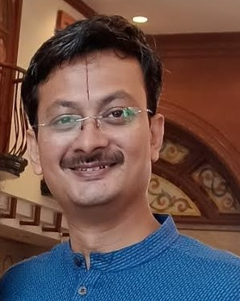

Contact Me
Summary:
A two decade experinced automotive professional expading my horizon to the filed of web development
Education
BE - Mechnical with Double Master's Managment in Strategy & Operations
Work Experience
- Kalyani Powertrain Ltd: April 2022 to Till Date
- Ola Electric Mobility : April 2021 till Mar 2022
- Mahindra Electric Mobility Ltd: Feb 2013 till Mar 2021
- Tata Motors Ltd - Passenger Car Business Unit: Aug 2016 till Feb 2013
- Toyota Tsusho India Pvt Ltd: Apr 2014 till Aug 2016
Skills
- Automotive purchase Managment
- Automotive program Managment
- Engineering Product development process
- Organisation System Design
- Product Strategy Managment
- Partnership Managment
- Coading for Algo trading
Awards
- Awarded Future Leadership Fellow at Tata Motors & Mahindra
- Certified Business Process practioner
- Profitable Trader for 1 full quarter continuously by Tradetron
Hobbies & interest